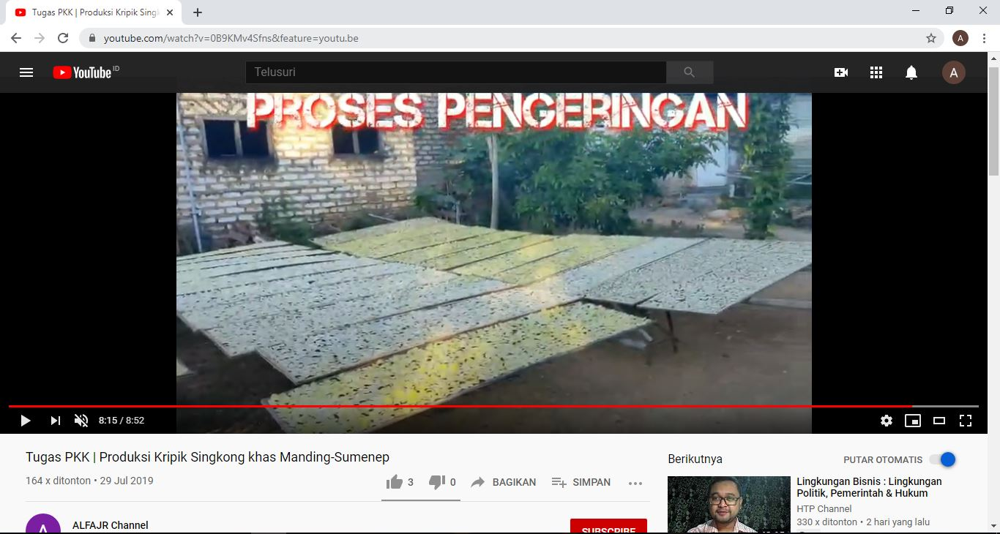

profil UD.potre koneng
UD.Potre Koneng merupakan pabrik berbagai macam kripik diantaranya kripik singkong, kriping sukun, marning jagung, kacang karpes dan masih bnyak yg lainnya. baca selengkapnya>>>>>
Proses pembuatan kripik singkong UD.Potre Koneng
Untuk proses pembuatannya bisa dibilang gampang gampang susah, yang harus disiapkan dalam proses pembuatan kripik singkong yaitu singkong yang bagus baca selengkapnya>>>>

bisa klik link dibawah ini:...
>>>>>>>>DISINI>>>>>>>
video proses pembuatan kripik singkong potre koneng
untuk video pembuatan kripik singkong potre koneng:bisa klik link dibawah ini:...
>>>>>>>>DISINI>>>>>>>